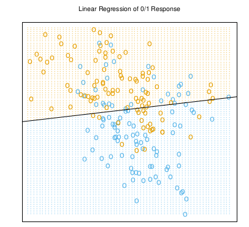
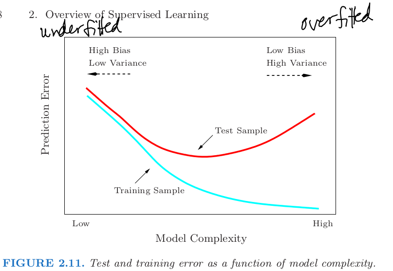

Introduction
(week 1, part 3)
books
- ESL and ADA cover very similar material
- both compare linear regression and nearest-neighbour methods as opposite ends of a complexity spectrum
- ESL has more on dimensionality
Fisher’s irises
- Canadian content (irises of the Gaspé peninsula) (Fisher 1936)
- Fisher was a eugenist (!) (Bodmer et al. 2021)
- multiple versions of the data set, with errors … (Bezdek et al. 1999)
- alternative: Palmer penguins dataset
Fisher, R. A. 1936. “The Use of Multiple Measurements in Taxonomic Problems.” Annals of Eugenics 7 (2): 179–88. https://doi.org/10.1111/j.1469-1809.1936.tb02137.x.
Bodmer, Walter, R. A. Bailey, Brian Charlesworth, Adam Eyre-Walker, Vernon Farewell, Andrew Mead, and Stephen Senn. 2021. “The Outstanding Scientist, R.A. Fisher: His Views on Eugenics and Race.” Heredity 126 (4): 565–76. https://doi.org/10.1038/s41437-020-00394-6.
Bezdek, J. C., J. M. Keller, R. Krishnapuram, L. I. Kuncheva, and N. R. Pal. 1999. “Will the Real Iris Data Please Stand Up?” IEEE Transactions on Fuzzy Systems 7 (3): 368–69. https://doi.org/10.1109/91.771092.
linear models
- can write out as \(\hat Y = \hat \beta_0 + \sum X_j \hat \beta_j\)
- go almost immediately to \(\hat Y = X^{\top} \hat \beta\) or \(\left<X, \beta\right>\) or \(\mathbf X \beta\)
- \(\mathbf X\) is the model matrix (sometimes “design matrix”)
- usually includes an intercept column
- can contain any (precomputed) functions of input variables
- input vars (directly measured) \(\to\) predictor vars (transformations, basis expansions, etc.)
- 1D examples
least squares
- choose L2 norm (p-norm = \(\left( \sum |x|^p \right)^{1/p}\))
- \(\sum_i (Y_i - X_i \beta)^2\)
- equivalent to \((\mathbf y-\mathbf X\beta)^\top (\mathbf y-\mathbf X\beta)\)
- differentiate and solve: \(\hat \beta = (\mathbf X^\top\mathbf X)^{-1} \mathbf X^\top \mathbf y\)
- hat matrix: \[ \begin{split} \hat x = H \mathbf y& = \mathbf X\hat \beta \\ & = \mathbf X(\mathbf X^\top\mathbf X)^{-1} \mathbf X^\top \mathbf y\\ H & = \mathbf X(\mathbf X^\top\mathbf X)^{-1} \mathbf X^\top \end{split} \]
- regression as a linear filter
- cf. explicit expression in ADA 1.52
regression: nuts and bolts
- never do naive linear algebra!
fortunes::fortune("SLOOOOW")
- R: QR decomp with Householder rotations
- see: lm.c, dqlrs, dqrdc2 (from the beginning)
- Julia ???
- will dig into computational details a bit next week (?)
regression as classification

- slightly weird
- looseness of “classification” vs “regression”
- should probably use discriminant analysis here
- or logistic regression
nearest-neighbor
- \(\frac{1}{k} \sum_{x_i \in N_k(x)} y_i\)
- also a linear smoother: columns of \(\mathbf X\) are \(1/k \times\) indicator variables: \((x_i \in N_k(x))\) and the \(\beta\) values are \(y_i\)
- hardening predictions: better to leave as a probability?
consistency
- if we want consistency we need (roughly) the number of observations used to make a prediction to grow (fast enough) with the total sample size \(N\)
- doesn’t hold for fixed \(k\)
- but will work if \(k/n \to 0\) as \(k\to \infty, n \to \infty\) (ADA)
from nearest to \(k\)-NN
- unlike (this version of) linear regression, complexity is adjustable
- from “nearest neighbor” to “\(N\)-n.n.” (i.e. the mean)
- tuning parameter (\(k\)) is discrete (e.g. awkward for optimization)
poll: what are some ways we can modify linear regression to have adjustable complexity?
from NN to kernel smoothers (ADA, ESL 2.8.2)
- kernel density estimation may be familiar
- generalize “nearest neighbor” kernel
- from ADA: \[ \hat \mu(x) = \sum_i \left( \frac{K(x_i, x)}{\sum_j K(x_j, x)} \right) y_i \]
- or \(K(d(x_i,x)/h)\) where \(h\) is the bandwidth
- also not consistent unless we let \(h \to 0\) and \(n \to \infty\) (at the “right” rate)
dimensionality
- curse of dimensionality
- more points are near the edge of a set
- more points are needed to “fill in”/characterize a density
- the mode of a distribution is no longer “typical” in some sense(Gelman 2020)
- heuristic: surface to volume ratio of a \(p\)-ball is \(p\)1
- results from ESL: distance from origin to nearest point (of \(N\)) in dimension \(p\) \[ d(p,N) = \left(1- \frac{1}{2}^{1/N} \right)^{1/p} \]
- Bayesians: the mode is not “typical” Gelman (2020)
Gelman, Andrew. 2020. “The Typical Set and Its Relevance to Bayesian Computation.” Statistical Modeling, Causal Inference, and Social Science. https://statmodeling.stat.columbia.edu/2020/08/02/the-typical-set-and-its-relevance-to-bayesian-computation/.
1 surprisingly slow!
bias-variance expansion/trade-off
- general expansion of \(E[(y-\hat \mu(x))^2]\), expanded as \[ E[(\underbrace{(y-\mu(x))}_{\textrm{diff betw y, true RF}}+ \underbrace{(\mu(x)-\hat \mu(x)}_{\textrm{diff betw true RF, chosen approx}})^2 \]
- take expectations, drop 0 terms \(\to\) variance + bias\(^2\)
- allow for variation across training sets, get \(\sigma^2 + \mathrm{var} + \mathrm{bias}^2\) (ESL 2.47)
- ADA example: true function (sine) is worse than a constant function for noisy data (Fig 1.3). cf. Walters and Ludwig (1981)
- bias \(\approx\) within-sample error; easy to minimize
Walters, Carl J., and Donald Ludwig. 1981. “Effects of Measurement Errors on the Assessment of Stock–Recruitment Relationships.” Canadian Journal of Fisheries and Aquatic Sciences 38 (6): 704–10. https://doi.org/10.1139/f81-093.
the picture

- want to find the ‘sweet spot’ with low computational effort, with minimal assumptions, and without snooping
effective degrees of freedom
- may be able to compute a complexity measure, for simple cases
- … such as linear weights
- trace of the hat matrix; ADA 1.66-1.68
- related to ESL 2.28